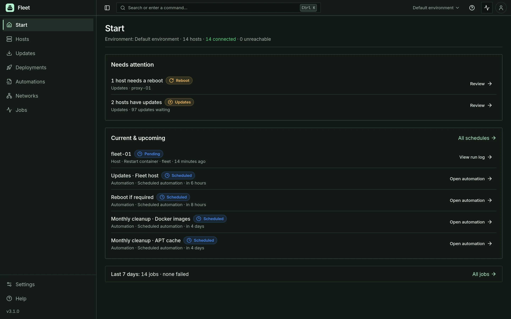
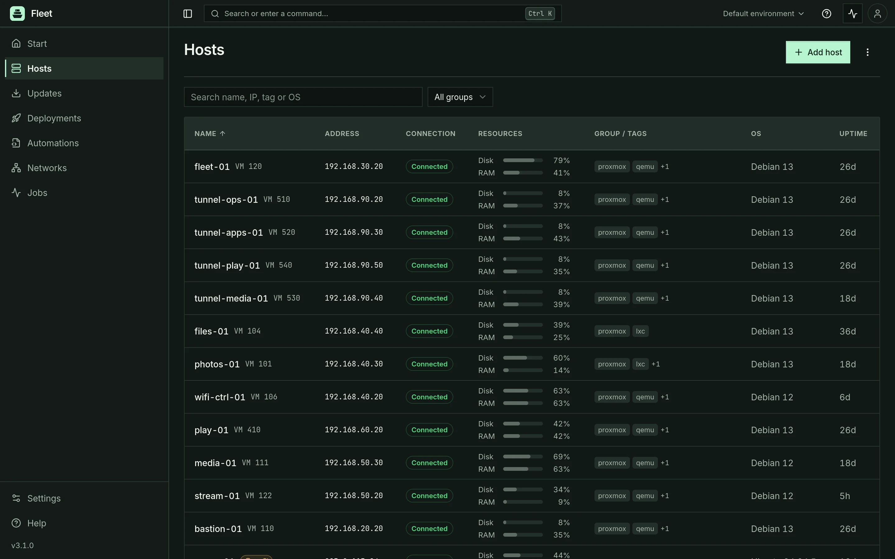
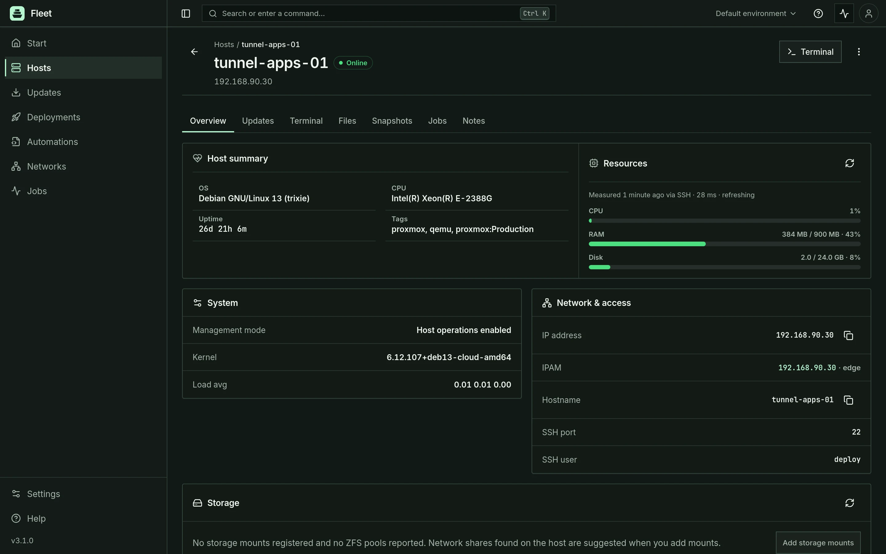
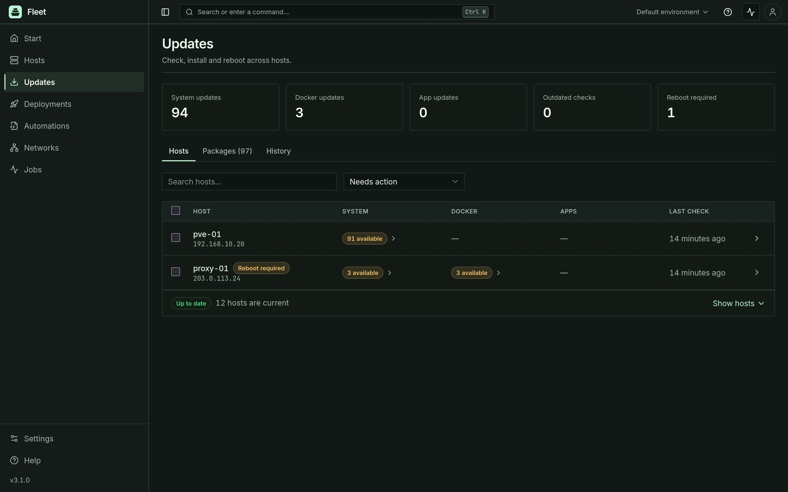
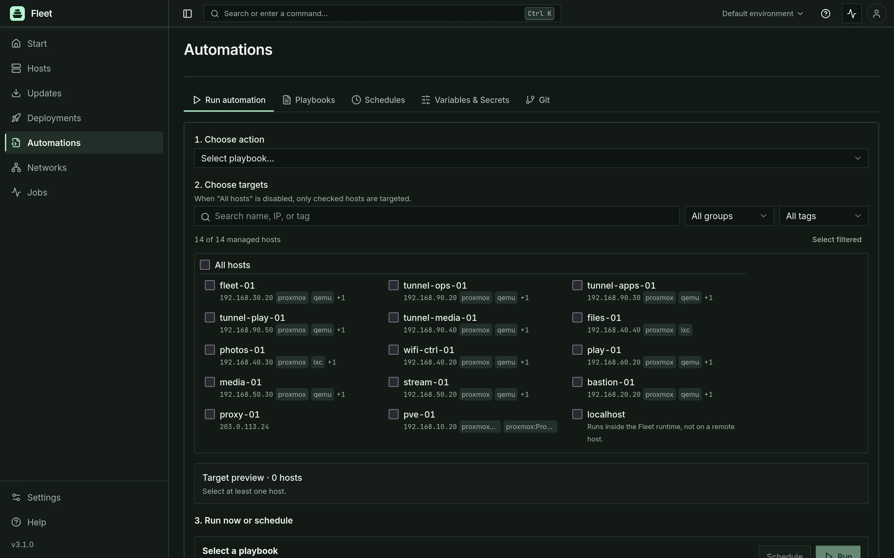
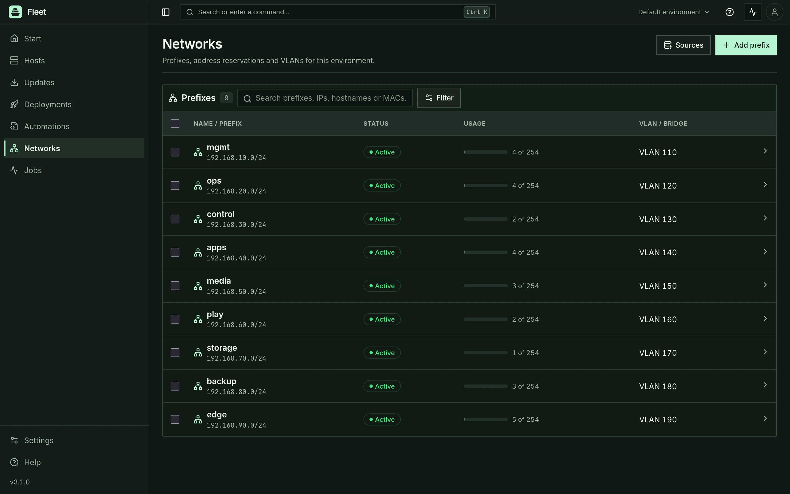
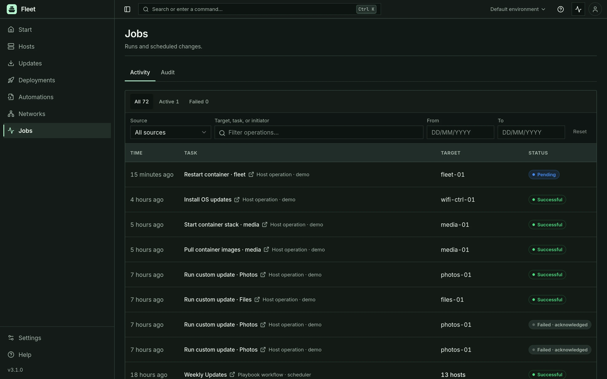

A little less “what’s going on?”
Host health, resource usage, system updates, and Docker inventory. See where attention is needed before opening a terminal.
SELF-HOSTED. OPEN SOURCE. YOURS.
Less jumping between tools.
More getting things done.
A single home for your Linux hosts, containers, and everyday operations. Built for the infrastructure you run.
Runs on your hardware. Connects over SSH. No agent required.







BUILT FOR THE EVERYDAY
Start with a single host. Bring the rest of your infrastructure
together when you’re ready.
Host health, resource usage, system updates, and Docker inventory. See where attention is needed before opening a terminal.
Open an SSH terminal, transfer files, inspect container logs, or manage a Compose stack. Keep the host context with you.
Bring Ansible playbooks, variables, Git integration, and schedules into your daily workflow.
Connect Proxmox, explore guests, organize IP addresses, and provision managed VMs with OpenTofu. Add what you need, when you need it.
YOUR HARDWARE. YOUR RULES.
Fleet runs on your own infrastructure. Your credentials, configuration, and operational data stay in the deployment you control.
Designed for a private network or VPN. Fleet holds infrastructure credentials; keep your installation off the public internet.
YOUR NEXT PORT OF CALL
A Docker host. An SSH connection. You’re on your way.
Download the Compose file on your Docker host.
Start the container. Secrets and certificate are generated for you.
Create your admin account, set up SSH, and start exploring.
mkdir fleet && cd fleet
curl -fsSLO https://raw.githubusercontent.com/tobayashi-san/Fleet/main/docker-compose.yml
docker compose up -d --waitThe guide covers backing up your key, TLS, first-time setup, and secure network access.
Read the code. Report a bug. Make it yours.
Join us on GitHub